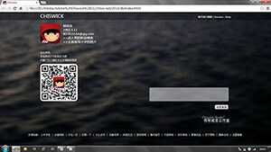
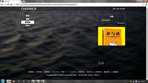
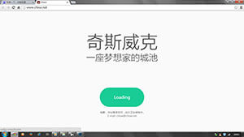
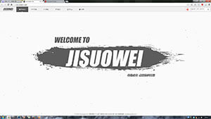
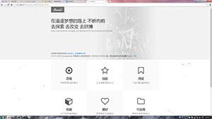
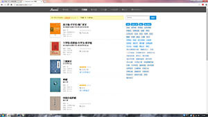
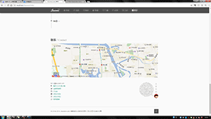
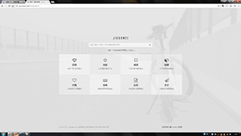
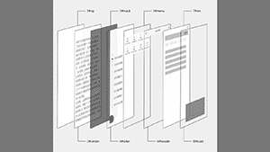

<!DOCTYPE html>
<html>
<head>
	<title title="info">关于-奇斯威克-Jisuowei.com</title>
	<meta http-equiv="content-type" content="text/html;charset=utf-8" />
	<meta name="viewport" content="width=device-width,initial-scale=1.0,user-scalable=0">
	<link rel='stylesheet' type='text/css' href='../css/jikit.css' />
	<link rel='stylesheet' type='text/css' href='../css/jisuowei.css' />
	<link rel='stylesheet' type='text/css' href='../css/jisuowei_mobile.css' />
<style>
#center h3 {margin:36px 0 12px 0;}
#center h4 {font-weight: normal;font-size: 18px;letter-spacing: 2px;font-family: 'Georgia';margin-bottom: 12px;}
#center h4:before {position: absolute;left:-4px;display:inline-block;content:'';width:12px;height:12px;border:3px solid #fff;border-radius:12px;background:#a6a6a6;}
#center h4 span {font-size:12px;padding:2px 6px 1px 6px;background:#acacac;color:#fff;margin-left:8px;border-radius:2px;display:inline-block;letter-spacing:0;text-shadow:1px 1px 1px #5c5c5c;font-family:"DINCondWeb";}
#top p, #mid p, #btm p {color: #5c5c5c;font-size: 14px;line-height: 24px;}
#center .title_1 {font-size:20px;margin:48px 0 12px 0;font-weight:normal;border-left: 8px solid #a0a0a0;padding-left:12px;height:20px;line-height:20px}
#center .title_1 span {font-size: 14px;color: #a0a0a0;margin-left:4px;font-family:"DINCondWeb";}
</style>
</head>
<body>

</body>
<script src="../../static/js/jquery.2.1.1.min.js"></script>
<script src="../js/jikit.js"></script>
<script src="../js/jisuowei.js"></script>
<script src="https://api.map.baidu.com/api?v=2.0&ak=hWlAC3G3AFjWt3QGjB5o7eK4HIqzMhQZ"></script>
<script>

$('#top').html(
	'<p class="title_1">致谢 <span>/ Thanks</span></p>'
	+ '<p>Logo SVG 使用了 Ostrich Sans Heavy 字体；</p>'
	+ '<p>首页下载链接 引用了百度软件；</p>'
	+ '<p>jQuery 引用了百度 CDN jQuery 2.1.1版本 (c) 2005, 2014 jQuery Foundation, Inc.；</p>'
	+ '<P>视差效果 使用了 TweenMax.min.js 1.17.0版本 @license Copyright (c) 2008-2015, GreenSock；</P>'
	+ '<P>粒子效果 使用了 Particles.min.js 1.0.3版本 Author : Vincent Garreau  - vincentgarreau.com；</P>'
	+ '<p>背景音乐 引用了网易音乐平台提供的外链，歌曲信息：Imagine-John Lennon；</p>'
	+ '<p>导航图标 使用了 Fontawesome 4.6.3版本；</p>'
	+ '<p>图书信息采集自 多看阅读；</p>'
	+ '<p>数字累加效果 使用了 https://github.com/inorganik/countUp.js；</p>'
	+ '<p>部分英文和数字 使用了 DINCond Web字体；</p>'
	+ '<P>示例代码 使用了 Microsoft Consolas 字体；</P>'
	+ '<P>示例代码着色 使用了 Highlight.js 9.5.0版本；</P>'
	+ '<P>日志框架 使用了 WordPress 4.5.3版本；</P>'
	+ '<P>地图 使用了 百度地图 BMap API；</P>'
	+ '<p>图表插件 使用了百度 ECharts；</p>'
	+ '<br/>'
	+ '<p>~\\(≧▽≦)/~ 十分感谢！</p>'
	+ '<br/>'
	);


$('#mid').html(
'<p class="title_1">版本 <span>/ Versions</span></p>'
+ '<div id="timeAxis">'
	+ '<h4>2014.8<span>Beta</span></h4>'
	+ ''
	+ '<p>第一个公开页面；</p><br/><br/>'

	+ '<h4>2014.9<span>Beta</span></h4>'
	+ ''
	+ '<p>新增：相簿；联系；</p><br/><br/>'

	+ '<h4>2014.11<span>Beta</span></h4>'
	+ ''
	+ '<p>修改：风格；</p><br/><br/>'

	+ '<h4>2015.9<span>1.0</span></h4>'
	+ ''
	+ '<p>新增：历程；技能；博客；书架；</p><br/><br/>'

	+ '<h4>2016.7<span>2.0</span></h4>'
	+ ''
	+ '<p>新增：全动态导航条；书籍封面、笔记 、标签和评级；收藏、兴趣、代码库、jisuowei.js、关于 五大版块；</p>'
	+ '<p>修改：LOGO，首页，导航样式，页脚；</p><br/><br/>'

	+ '<h4>2016.8<span>2.0</span></h4>'
	+ ''
	+ '<p>增加：历程组件；ji-exhibit.js组件；新版技能页面；</p>'
	+ '<p>修改：首页版式；导航条位置；适应移动端宽度；去除页面中央容器；</p><br/><br/>'

	+ '<h4>2016.9<span>2.0</span></h4>'
	+ ''
	+ '<p>增加：阅读版块的 搜索、分页、标签查询；</p><br><br>'

	+ '<h4>2016.12<span>2.0</span></h4>'
	+ ''
	+ '<p>增加：简洁页脚；关于页面时间轴；</p>'
	+ '<p>修改：首页；一些配色；部分小图标；标题样式；</p><br><br>'

	+ '<h4>2017.1<span>3.0 Beta</span></h4>'
	+ ''
	+ '<p>增加：2017新LOGO；GitHub 风格；</p>'
	+ '<p>修改：首页；阅读改为双列；新风格下的一些配色；码库改为Tab切换；全部使用json数据；</p><br><br>'

	+ '<h4>2017.2<span>3.0</span></h4>'
	+ ''
	+ '<p>增加：Jikit v1.0；</p>'
	+ '<p>修改：全面适配移动端；修改部分数据字段；Jikit.Exhibit样式；部分配色；</p><br><br>'

	+ '<br><h4>Coding..</h4>'

+ '</div><br><br><br>'
	);

$('#btm').html(
'<p class="title_1">联系 <span>/ Contact</span></p>'
+ '<div id="jiMap"><div id="jiMapCont"></div></div><br/><br/>'
+ '<div id="jiContact">'
	+ '<div>'
		+ '<p><i class="fa fa-envelope-o"></i>i@jisuowei.com</p>'
		+ '<p><i class="fa fa-map-pin"></i><a id="zoomMap" href="javascript:;">南京-江宁-胜太路</a></p>'
		+ '<p><i class="fa fa-weibo"></i><a href="http://weibo.com/chiswick" target="_blank">@奇斯威克</a></p>'
		+ '<p><i class="fa fa-github"></i><a href="https://github.com/chisw" target="_blank">Chisw</a></p>'
		+ '<p><i class="fa fa-linkedin-square"></i><a href="https://cn.linkedin.com/in/jisuowei" target="_blank">JISUOWEI</a></p>'
		+ '<p><i class="fa fa-dribbble"></i><a href="https://dribbble.com/jisuowei" target="_blank">JISUOWEI</a></p>'
		+ '<p><i class="fa fa-commenting-o"></i><a target="_blank" href="https://jisuowei.com/post/jnp5iu">给我留言</a></p>'
		+ '<br>'
		+ '<br>'
	+ '</div>'
	+ '<div class="clear"></div>'
+ '</div>'
	);


var map = new BMap.Map('jiMapCont');
var point = new BMap.Point(118.828,31.95);
map.addControl(new BMap.NavigationControl());
map.centerAndZoom(point, 14);
map.disableDragging();
var marker = new BMap.Marker(point);  // 创建标注
map.addOverlay(marker);               // 将标注添加到地图中
marker.setAnimation(BMAP_ANIMATION_BOUNCE); //跳动的动画

$('#zoomMap').click(function(){
	map.zoomTo(15);
	map.panTo(point);
});

Jikit.imgFreeze();

</script>
</html>